Transcript-based isoLASER: genome-wide FDR
XSun
2026-10-23
Last updated: 2026-10-26
Checks: 6 1
Knit directory: long_read_rna/
This reproducible R Markdown analysis was created with workflowr (version 1.7.0). The Checks tab describes the reproducibility checks that were applied when the results were created. The Past versions tab lists the development history.
The R Markdown file has unstaged changes. To know which version of
the R Markdown file created these results, you’ll want to first commit
it to the Git repo. If you’re still working on the analysis, you can
ignore this warning. When you’re finished, you can run
wflow_publish to commit the R Markdown file and build the
HTML.
Great job! The global environment was empty. Objects defined in the global environment can affect the analysis in your R Markdown file in unknown ways. For reproduciblity it’s best to always run the code in an empty environment.
The command set.seed(20260908) was run prior to running
the code in the R Markdown file. Setting a seed ensures that any results
that rely on randomness, e.g. subsampling or permutations, are
reproducible.
Great job! Recording the operating system, R version, and package versions is critical for reproducibility.
Nice! There were no cached chunks for this analysis, so you can be confident that you successfully produced the results during this run.
Great job! Using relative paths to the files within your workflowr project makes it easier to run your code on other machines.
Great! You are using Git for version control. Tracking code development and connecting the code version to the results is critical for reproducibility.
The results in this page were generated with repository version 61785e0. See the Past versions tab to see a history of the changes made to the R Markdown and HTML files.
Note that you need to be careful to ensure that all relevant files for
the analysis have been committed to Git prior to generating the results
(you can use wflow_publish or
wflow_git_commit). workflowr only checks the R Markdown
file, but you know if there are other scripts or data files that it
depends on. Below is the status of the Git repository when the results
were generated:
Unstaged changes:
Modified: analysis/index.Rmd
Modified: analysis/isolaser_fdr_panel10.Rmd
Modified: analysis/isolaser_fdr_panel10nc.Rmd
Modified: analysis/isolaser_fdr_reads10.Rmd
Modified: analysis/isolaser_fdr_reads10nc.Rmd
Modified: analysis/isolaser_gtex_comparison_panel10.Rmd
Modified: analysis/isolaser_gtex_comparison_panel10nc.Rmd
Modified: analysis/isolaser_gtex_comparison_reads10.Rmd
Modified: analysis/isolaser_gtex_comparison_reads10nc.Rmd
Note that any generated files, e.g. HTML, png, CSS, etc., are not included in this status report because it is ok for generated content to have uncommitted changes.
These are the previous versions of the repository in which changes were
made to the R Markdown
(analysis/isolaser_fdr_panel10nc.Rmd) and HTML
(docs/isolaser_fdr_panel10nc.html) files. If you’ve
configured a remote Git repository (see ?wflow_git_remote),
click on the hyperlinks in the table below to view the files as they
were in that past version.
| File | Version | Author | Date | Message |
|---|---|---|---|---|
| Rmd | 61785e0 | XSun | 2026-10-23 | update |
| html | 61785e0 | XSun | 2026-10-23 | update |
| Rmd | 2f66324 | XSun | 2026-10-23 | update |
| html | 2f66324 | XSun | 2026-10-23 | update |
Transcript-based isoLASER labels each read as including or excluding an exonic part from the transcript isoLASER assigned it to, as isoLASER itself does. We keep it to compare with our main analysis, read-based isoLASER, which labels each read from its own alignment. This page is the genome-wide permutation FDR without the clustering filter; the run with the filter remains as an earlier setup.
Setup (our definitions):
- No clustering filter. It was added for the original run, where donors were chosen by their RNA allele fraction: a cluster of variant calls is often misaligned reads rather than real SNPs. Here every tested SNP must already be heterozygous in our genotype panel, so we dropped the filter; the comparison below shows what it had removed.
- As in the filtered run: isoLASER’s inclusion labels
(from each read’s assigned transcript), panel-heterozygous donors with ≥
10 reads, every recorded variant × exonic part, ≥ 20 reads over the
donors used and a part of ≥ 10 bp in the tested family, the shuffles,
isoLASER’s scoring functions, the adaptive rounds, BH within each
timepoint, and the
cis/ |ΔPSI| ≥ 0.10 screen. - Checks: before comparing, we confirmed for every chromosome × timepoint that both runs are finished and current. They use the same isoLASER recordings, the same association list and genotype inputs, and identical unshuffled scores in round 1, so the runs differ only in the clustering filter. As in every run, each unshuffled score was rebuilt independently, and all 66 chromosome × timepoint checks matched.
- Not yet done: calibration runs.
Main result: 85 associations in 29 genes have q < 0.05 and pass the screen, against 64 in 26 genes in the run with the clustering filter. No association reported there is lost here. 46 association × timepoint results are gained, in 10 genes; 3 of these genes are not reported in the run with the clustering filter at all (ARF4, ENSG00000289047, TAX1BP1). Most gained results belong to genes whose effects vanish with read-based labels (below), so they reflect transcript assignment rather than allelic splicing.
Genome-wide results
| Timepoint | Tested associations | Paper’s cutoff | Screen | Screen + q < 0.10 | Screen + q < 0.05 |
|---|---|---|---|---|---|
| 0hr | 44,992 | 10,419 (978) | 302 (132) | 40 (15) | 37 (13) |
| 1hr | 68,841 | 11,880 (1,362) | 528 (203) | 69 (25) | 59 (21) |
| 6hr | 71,861 | 12,086 (1,350) | 490 (201) | 53 (21) | 51 (20) |
| any timepoint | 87,444 | 23,251 (2,101) | 1,145 (433) | 97 (35) | 85 (29) |
Cells other than Tested associations show
associations (genes). Paper’s cutoff:
isoLASER’s own cis call with no other filter, as in the
isoLASER paper; it does not depend on our family rules, so it is the
same as on the page with the clustering filter. Screen
(our definition), before FDR control: among the tested associations,
isoLASER’s cis rule computed on the panel-heterozygous
donors only, plus |ΔPSI| ≥ 0.10. Any timepoint counts
each gene or association once across timepoints. BH targets FDR within
each timepoint’s full family; the effect-filtered subset and the union
across timepoints have no separate 5% FDR guarantee.
Compared with the run with the clustering filter
| Timepoint | Tested: with filter | Tested: this run | Screen + q < 0.05: with filter | Screen + q < 0.05: this run | Kept | Gained | Lost |
|---|---|---|---|---|---|---|---|
| 0hr | 40,164 | 44,992 | 25 (12) | 37 (13) | 25 | 12 | 0 |
| 1hr | 60,866 | 68,841 | 41 (17) | 59 (21) | 41 | 18 | 0 |
| 6hr | 63,223 | 71,861 | 35 (16) | 51 (20) | 35 | 16 | 0 |
| any timepoint | 76,939 | 87,444 | 64 (26) | 85 (29) |
Kept / Gained / Lost count reported associations at each timepoint: reported in both runs, only here, or only in the run with the clustering filter. Dropping the filter adds 14% more tested associations; every association tested in the run with the clustering filter is tested here too.
Newly tested associations
These are the associations the clustering filter had removed. Each one’s variant has at least one other candidate variant within 30 bases, a neighbour:
| Timepoint | Newly tested | Neighbours: panel variants only | Neighbours: unsupported calls only | Neighbours: both kinds |
|---|---|---|---|---|
| 0hr | 4,828 | 3,486 | 1,201 | 141 |
| 1hr | 7,975 | 4,997 | 2,640 | 338 |
| 6hr | 8,638 | 5,408 | 2,756 | 474 |
A neighbour is a panel variant if our genotype panel has a single matching, well-genotyped record (typed, or imputed with R² ≥ 0.8), whatever the donors’ genotypes. It is an unsupported call if the panel has no such record, or if it is not a single-base variant. Most newly tested variants sit next to real panel variants, that is, two real SNPs close together.
Gained associations
| Timepoint | Gene | Variant | Exonic part | Het donors | ΔPSI | q | q with filter | Neighbours | MHC | With read-based labels |
|---|---|---|---|---|---|---|---|---|---|---|
| 0 hr | CYBA | chr16:88643303:A>G | chr16:88643289-88643312:- | 2 | -0.56 | 0.0018 | not tested | panel variants only | ΔPSI -0.02, not reported | |
| 0 hr | CST3 | chr20:23637933:T>G | chr20:23637932-23637945:- | 3 | -0.68 | 0.0018 | not tested | panel variants only | ΔPSI +0.00, not reported | |
| 0 hr | CST3 | chr20:23637933:T>G | chr20:23637945-23637955:- | 3 | -0.68 | 0.0018 | not tested | panel variants only | ΔPSI +0.00, not reported | |
| 0 hr | CST3 | chr20:23637941:C>T | chr20:23637932-23637945:- | 1 | -0.68 | 0.0018 | not tested | panel variants only | ΔPSI +0.00, not reported | |
| 0 hr | CST3 | chr20:23637941:C>T | chr20:23637945-23637955:- | 1 | -0.68 | 0.0018 | not tested | panel variants only | ΔPSI +0.00, not reported | |
| 0 hr | ARF4 | chr3:57571396:A>G | chr3:57584007-57584032:- | 1 | +0.49 | 0.0018 | not tested | panel variants only | ΔPSI -0.01, not reported | |
| 0 hr | ARF4 | chr3:57571406:T>A | chr3:57584007-57584032:- | 1 | +0.49 | 0.0018 | not tested | panel variants only | ΔPSI -0.01, not reported | |
| 0 hr | ARF4 | chr3:57571432:A>G | chr3:57584007-57584032:- | 1 | +0.47 | 0.0018 | not tested | panel variants only | ΔPSI -0.02, not reported | |
| 0 hr | PFKP | chr10:3136793:T>C | chr10:3129006-3129818:+ | 2 | +0.20 | 0.0170 | not tested | panel variants only | not testable | |
| 0 hr | PFKP | chr10:3136715:T>C | chr10:3129006-3129818:+ | 2 | +0.20 | 0.0190 | not tested | panel variants only | not testable | |
| 0 hr | CHORDC1 | chr11:90223037:G>A | chr11:90213420-90213978:- | 2 | +0.44 | 0.0440 | 0.054 | none | ΔPSI -0.03, not reported | |
| 0 hr | CHORDC1 | chr11:90223037:G>A | chr11:90213978-90214017:- | 2 | +0.44 | 0.0440 | 0.054 | none | ΔPSI -0.03, not reported | |
| 1 hr | PFKP | chr10:3136793:T>C | chr10:3129006-3129818:+ | 2 | +0.13 | 0.0015 | not tested | panel variants only | ΔPSI +0.04, not reported | |
| 1 hr | CYBA | chr16:88643303:A>G | chr16:88643289-88643312:- | 2 | -0.55 | 0.0015 | not tested | panel variants only | ΔPSI +0.00, not reported | |
| 1 hr | CST3 | chr20:23637933:T>G | chr20:23637932-23637945:- | 3 | -0.62 | 0.0015 | not tested | panel variants only | ΔPSI +0.00, not reported | |
| 1 hr | CST3 | chr20:23637933:T>G | chr20:23637945-23637955:- | 3 | -0.62 | 0.0015 | not tested | panel variants only | ΔPSI +0.00, not reported | |
| 1 hr | ARF4 | chr3:57571396:A>G | chr3:57584007-57584032:- | 1 | +0.56 | 0.0015 | not tested | panel variants only | ΔPSI -0.01, not reported | |
| 1 hr | ARF4 | chr3:57571432:A>G | chr3:57584007-57584032:- | 1 | +0.53 | 0.0015 | not tested | panel variants only | ΔPSI -0.01, not reported | |
| 1 hr | ENSG00000289047 | chr6:32894904:C>T | chr6:32894927-32895026:+ | 2 | +0.56 | 0.0015 | not tested | panel variants only | yes | reported |
| 1 hr | ZFAND2A | chr7:1160153:G>C | chr7:1153224-1153241:- | 1 | +0.66 | 0.0028 | not tested | panel variants only | ΔPSI +0.06, not reported | |
| 1 hr | ZFAND2A | chr7:1160154:G>C | chr7:1153224-1153241:- | 1 | +0.66 | 0.0028 | not tested | panel variants only | ΔPSI +0.06, not reported | |
| 1 hr | PFKP | chr10:3136715:T>C | chr10:3125096-3125249:+ | 2 | +0.16 | 0.0040 | not tested | panel variants only | ΔPSI +0.04, not reported | |
| 1 hr | PFKP | chr10:3136715:T>C | chr10:3129006-3129818:+ | 2 | +0.12 | 0.0051 | not tested | panel variants only | ΔPSI +0.04, not reported | |
| 1 hr | PFKP | chr10:3136793:T>C | chr10:3100920-3101000:+ | 2 | +0.14 | 0.0051 | not tested | panel variants only | not testable | |
| 1 hr | PFKP | chr10:3136793:T>C | chr10:3068648-3068740:+ | 2 | +0.14 | 0.0100 | not tested | panel variants only | not testable | |
| 1 hr | ZFAND2A | chr7:1160150:C>A | chr7:1153224-1153241:- | 1 | +0.60 | 0.0110 | not tested | panel variants only | ΔPSI +0.05, not reported | |
| 1 hr | TAX1BP1 | chr7:27740145:G>A | chr7:27816394-27816520:+ | 1 | +0.68 | 0.0110 | not tested | unsupported calls only | not testable | |
| 1 hr | PFKP | chr10:3136793:T>C | chr10:3068626-3068648:+ | 2 | +0.27 | 0.0240 | not tested | panel variants only | not testable | |
| 1 hr | ANKRD36B | chr2:97547720:C>G | chr2:97576378-97576413:- | 2 | -0.30 | 0.0490 | 0.056 | none | not testable | |
| 1 hr | ANKRD36B | chr2:97547720:C>G | chr2:97576413-97576446:- | 2 | -0.30 | 0.0490 | 0.056 | none | not testable | |
| 6 hr | CYBA | chr16:88643303:A>G | chr16:88643274-88643288:- | 2 | -0.29 | 0.0018 | not tested | panel variants only | not testable | |
| 6 hr | CYBA | chr16:88643303:A>G | chr16:88643289-88643312:- | 2 | -0.60 | 0.0018 | not tested | panel variants only | ΔPSI +0.00, not reported | |
| 6 hr | CST3 | chr20:23637933:T>G | chr20:23637932-23637945:- | 3 | -0.68 | 0.0018 | not tested | panel variants only | ΔPSI +0.00, not reported | |
| 6 hr | CST3 | chr20:23637933:T>G | chr20:23637945-23637955:- | 3 | -0.68 | 0.0018 | not tested | panel variants only | ΔPSI +0.00, not reported | |
| 6 hr | ARF4 | chr3:57571396:A>G | chr3:57584007-57584032:- | 1 | +0.49 | 0.0018 | not tested | panel variants only | ΔPSI +0.00, not reported | |
| 6 hr | ARF4 | chr3:57571432:A>G | chr3:57584007-57584032:- | 1 | +0.47 | 0.0018 | not tested | panel variants only | ΔPSI +0.00, not reported | |
| 6 hr | ENSG00000289047 | chr6:32894904:C>T | chr6:32894927-32895026:+ | 2 | +0.68 | 0.0018 | not tested | panel variants only | yes | reported |
| 6 hr | ZFAND2A | chr7:1160153:G>C | chr7:1153224-1153241:- | 2 | +0.66 | 0.0018 | not tested | panel variants only | ΔPSI +0.00, not reported | |
| 6 hr | ZFAND2A | chr7:1160154:G>C | chr7:1153224-1153241:- | 2 | +0.66 | 0.0018 | not tested | panel variants only | ΔPSI +0.00, not reported | |
| 6 hr | PFKP | chr10:3136793:T>C | chr10:3068648-3068740:+ | 2 | +0.15 | 0.0041 | not tested | panel variants only | not testable | |
| 6 hr | PFKP | chr10:3136793:T>C | chr10:3100920-3101000:+ | 2 | +0.13 | 0.0140 | not tested | panel variants only | not testable | |
| 6 hr | PFKP | chr10:3136793:T>C | chr10:3069273-3069380:+ | 2 | +0.28 | 0.0220 | not tested | panel variants only | not testable | |
| 6 hr | ZFAND2A | chr7:1160150:C>A | chr7:1153224-1153241:- | 1 | +0.63 | 0.0320 | not tested | panel variants only | ΔPSI +0.00, not reported | |
| 6 hr | ANKRD36B | chr2:97547720:C>G | chr2:97576378-97576413:- | 2 | -0.36 | 0.0480 | 0.05 | none | tested, no score | |
| 6 hr | ANKRD36B | chr2:97547720:C>G | chr2:97576413-97576446:- | 2 | -0.36 | 0.0480 | 0.05 | none | tested, no score | |
| 6 hr | RPS27L | chr15:63157480:C>G | chr15:63152782-63153852:- | 2 | +0.50 | 0.0500 | 0.056 | none | not testable |
q with filter: “not tested” for associations the clustering filter removed; a value means the association was tested there and missed q < 0.05. Neighbours describes the candidate variants within 30 bases, as above. MHC: inside the major histocompatibility complex (chr6:28.5–33.5 Mb), the most polymorphic region of the genome, where reads are often misaligned. Download the gained associations with each neighbour listed.
Most gained results add associations, through clustered variants, to genes already reported in the run with the clustering filter: CST3, CYBA, PFKP and ZFAND2A, plus the new ARF4. CST3’s two variants lie inside the 13-base part tested on the the filtered run page. 7 gained results were tested with the filter and just missed q < 0.05 there (q = 0.05–0.056); here they pass, because BH’s threshold rises when many small p-values join the family.
With read-based labels (the same run without the clustering filter), only 2 of the 46 gained results are reported, both for ENSG00000289047 in the MHC. Another 31 are tested there and not reported; the 29 with a score have a median |ΔPSI| of 0.000, against 0.60 here. The remaining 13 cannot be tested. In this run the clustering filter was mostly removing transcript-assignment artefacts (our reading).
Genes. Reported in both runs: 26. Only in the run with the clustering filter: 0. Only here: ARF4, ENSG00000289047, TAX1BP1. Download the gene comparison.
How the test works
The test is the one described on the original page, with the donor rule and remaining family rules of the run with the clustering filter.
| Timepoint | Stopped at 1,000 | Stopped at 10,000 | Stopped at 100,000 | Reached 1,000,000 |
|---|---|---|---|---|
| 0hr | 44,526 | 336 | 72 | 58 |
| 1hr | 68,043 | 582 | 117 | 99 |
| 6hr | 71,125 | 571 | 79 | 86 |
Stopped means at least 20 hits at that checkpoint, or no observed score (p = 1). Every association with zero hits after a million shuffles has q < 0.05, so more shuffles would not change the results.
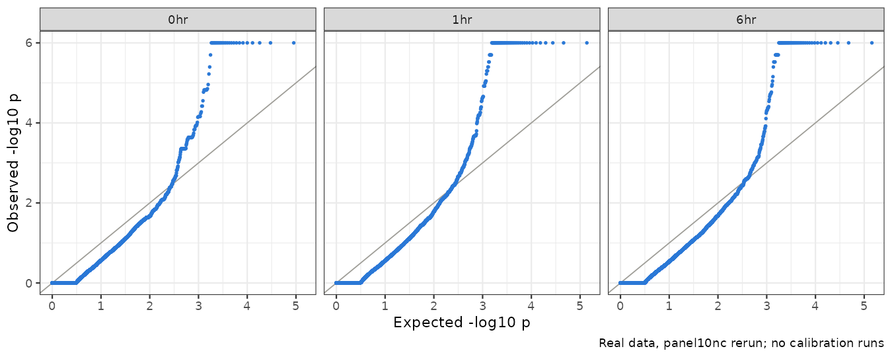
Real data only; there are no calibration runs for this run.
Genes to follow up
We apply the same two conditions as the page with the clustering filter: reported only after stimulation (at 1 or 6 hours, not at 0 hours), and neuron- or stimulation-related. 7 genes meet both. Five are shown, the same five as on the page with the clustering filter. Not shown, as there: ALDH3A2 (no 0-hour test) and UBE2Q2P2 (a pseudogene). No new gene meets both conditions. With read-based labels only PARK7 and ZNF749 remain; KPNA2, ASAH1 and LMBRD1 are not supported by the reads (read-based isoLASER).
| Gene | 0 hr | 1 hr | 6 hr | Best q | Het donors | Relevance |
|---|---|---|---|---|---|---|
| KPNA2 | +8 (125) | +2 (284) | +12 (500) | 0.0150 | 3 | Synapse, synaptic signaling (GO) |
| PARK7 | -7 (595) | -17 (980) | -8 (969) | 0.0015 | 2 | Neuron projection, neuron death (GO); the Parkinson’s disease gene DJ-1 |
| ZNF749 | -26 (88) | -17 (84) | -74 (127) | 0.0018 | 3 | Splicing after stimulation (our scan), at this exon’s donor sites |
| ASAH1 | +7 (36) | +21 (104) | +8 (65) | 0.0240 | 2 | Farber disease; spinal muscular atrophy with progressive myoclonic epilepsy (DDG2P) |
| LMBRD1 | +74 (35) | +85 (37) | +93 (76) | 0.0018 | 2 | Methylmalonic aciduria and homocystinuria, cblF type (DDG2P) |
0 / 1 / 6 hr: allelic effect in percentage points, alternative minus reference inclusion, with pooled informative coverage in brackets. Best q: the lowest timepoint-specific q-value. Het donors: the largest number of panel-heterozygous donors used, out of four.
For each of these genes the representative association, its donors and its reads are the same as in the run with the clustering filter (5 of 5 checked); only the q-values change slightly with the larger family. The figures below are drawn from this run.
How to read each gene’s figures:
- Permutation test: one panel per timepoint. Grey bars are the first 1,000 shuffled scores; the blue line is the observed score (AMI). The p-value uses the full adaptive run, up to a million shuffles.
- Read alignments: isoLASER’s
nigiri_plotsashimi renderer with the project’s plotting fixes. Reads are split into REF (blue) and ALT (orange) by isoLASER’s allele assignments and pooled over the donors used at each timepoint (heterozygous in the panel, ≥ 10 reads). Yellow marks the tested part. Coverage and arc numbers are raw read counts, on one scale per gene. Raw inclusion comes from isoLASER’s transcript assignment, so a read can count without reaching the plotted region. Each plot’s subtitles give how many reads reach it. The test uses donor-normalized tables, so its dPSI can differ slightly from the raw counts. - Isoforms and haplotypes, at 0 hours and at the
significant timepoint, drawn like Fig. 2d of the isoLASER paper:
- Rows: annotated transcripts with their GENCODE v44 name and Ensembl ID. Novel transcripts are IsoQuant models from our annotation, shown with their SQANTI3 category against GENCODE v44. NIC is a new combination of known splice sites; fusion spans two genes.
- Which rows: the three transcripts with the most reads in each group are drawn, and a grey row sums the rest. Introns are shortened.
- Marks: green is the tested part. Orange marks the tested SNP, plus the nearest in-phase SNP when that one is closer to the part.
- Numbers: reads per transcript from each haplotype, labelled by the tested SNP’s alleles, as raw counts summed over the donors used.
- PSI row: each haplotype’s inclusion from those raw counts: reads in transcripts that include the part, divided by all its reads, drawn and undrawn transcripts together.
- Test line: ΔPSI and q are the test’s values. The test pools donor-normalized tables, so its ΔPSI can differ slightly from the difference between the two raw PSIs.
KPNA2
The tested part is a whole 100-base intron between exons 6 and 7. KPNA2-221 keeps it, and the other annotated transcripts splice it out. isoLASER counts ALT (C) reads as keeping the intron more often than REF (T) reads: at 6 hours, 12.7% vs 2.5% (+12 pp, q = 0.015). At 0 and 1 hours the difference is +8 and +2 pp, below threshold. The tested SNP (rs12752) is in the first exon, 7.2 kb upstream. In the three donors, all 20 heterozygous panel SNPs within the gene are phased the same way, so T and C reads come from two whole-gene haplotypes. The nearest SNP to the intron, rs4638, is 135 bases downstream, with G on the T haplotype.
Permutation test
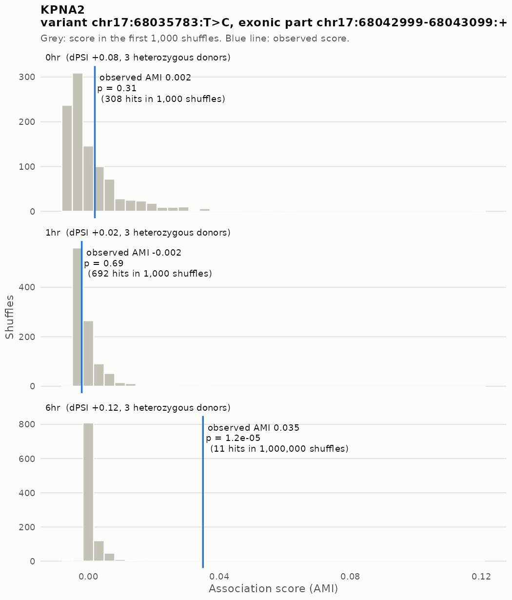
Read alignments

| Timepoint | Donors | REF inclusion (raw) | ALT inclusion (raw) | Test dPSI (normalized, pp) |
|---|---|---|---|---|
| 0 hr | CD_21,CD_31,CD_36 | 5/60 (8.3%) | 12/64 (18.8%) | +8.2 |
| 1 hr | CD_21,CD_31,CD_36 | 7/166 (4.2%) | 8/119 (6.7%) | +1.9 |
| 6 hr | CD_21,CD_31,CD_36 | 7/281 (2.5%) | 28/220 (12.7%) | +11.6 |
Isoforms and haplotypes
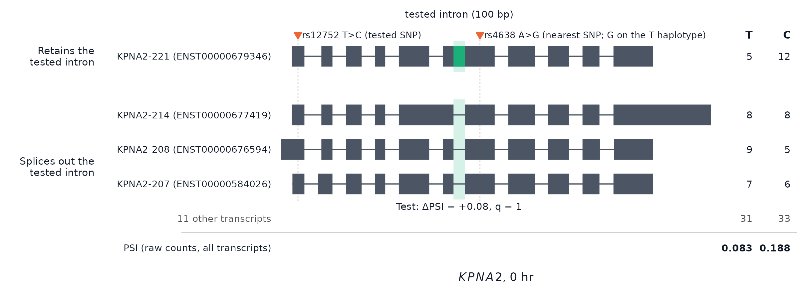
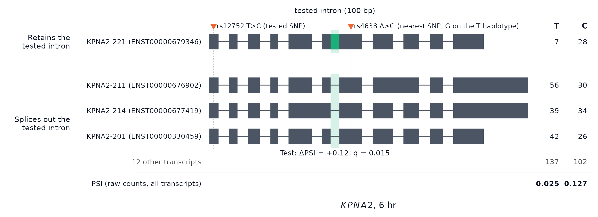
PARK7
The first exon ends at one of two donor sites 58 bases apart, an alternative 5′ splice site, and both sites splice to the same next exon. The tested 12-base part is the extra stretch of the longer first exon; the adjacent 46-base part gives the same result. ALT (C) reads use the shorter exon more often than REF (T) reads. The difference has the same direction at all three timepoints and in both donors, and is largest at 1 hour (−17 pp, q = 0.0015), the only significant timepoint; at 0 and 6 hours it is −7 and −8 pp. This describes each timepoint separately and is not a test of a change over time. The variant (rs226249) lies in the first exon, 18 bases before the shorter exon’s donor site.
Permutation test

Read alignments
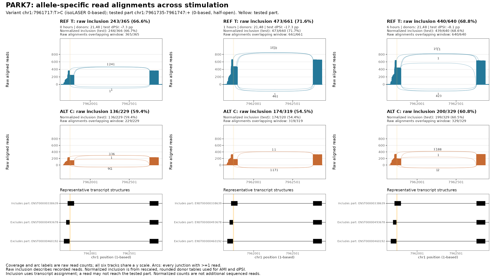
| Timepoint | Donors | REF inclusion (raw) | ALT inclusion (raw) | Test dPSI (normalized, pp) |
|---|---|---|---|---|
| 0 hr | CD_21,CD_48 | 243/365 (66.6%) | 136/229 (59.4%) | -7.3 |
| 1 hr | CD_21,CD_48 | 473/661 (71.6%) | 174/319 (54.5%) | -17.3 |
| 6 hr | CD_21,CD_48 | 440/640 (68.8%) | 200/329 (60.8%) | -8.1 |
Isoforms and haplotypes
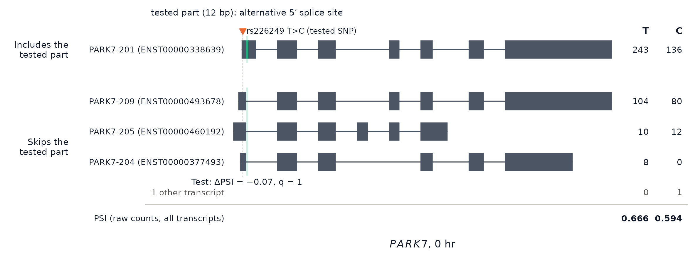

ZNF749
The tested part is a 355-base alternative last exon. Transcripts that use it end there, and the others continue to exons further downstream. REF (G) reads end in it far more often than ALT (C) reads. The difference is significant only at 6 hours (−74 pp, q = 0.0018); at 0 and 1 hours it is −26 and −17 pp and below threshold. In our stimulation splicing scan, the balance between the two donor sites that splice into this exon shifts between 0 and 6 hours.
The jump at 6 hours partly reflects which donors are used:
- CD_21 has a large effect at every timepoint: REF 92% vs ALT 15% inclusion at 0 hours, 86% vs 6% at 6 hours.
- CD_48 shows no difference at 0 hours, from only 8 ALT reads, and a large one at 6 hours (85% vs 19%).
- CD_36 has an inconsistent effect (−19 pp at 0 hours, +8 pp at 1 hour) and no reads at 6 hours.
Permutation test

Read alignments
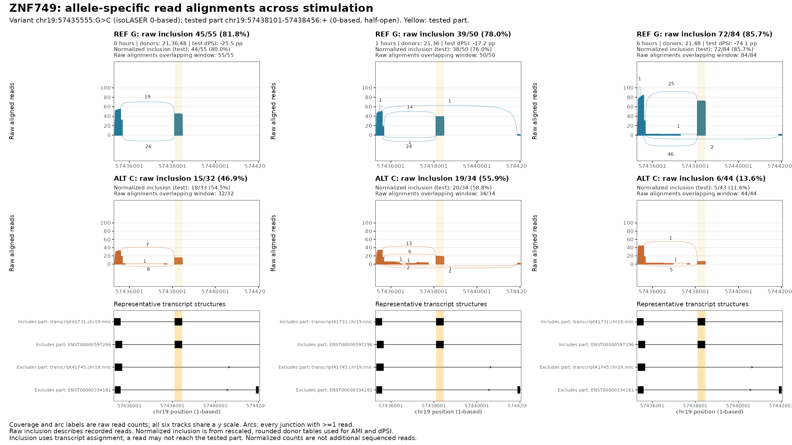
| Timepoint | Donors | REF inclusion (raw) | ALT inclusion (raw) | Test dPSI (normalized, pp) |
|---|---|---|---|---|
| 0 hr | CD_21,CD_36,CD_48 | 45/55 (81.8%) | 15/32 (46.9%) | -25.5 |
| 1 hr | CD_21,CD_36 | 39/50 (78.0%) | 19/34 (55.9%) | -17.2 |
| 6 hr | CD_21,CD_48 | 72/84 (85.7%) | 6/44 (13.6%) | -74.1 |
Isoforms and haplotypes

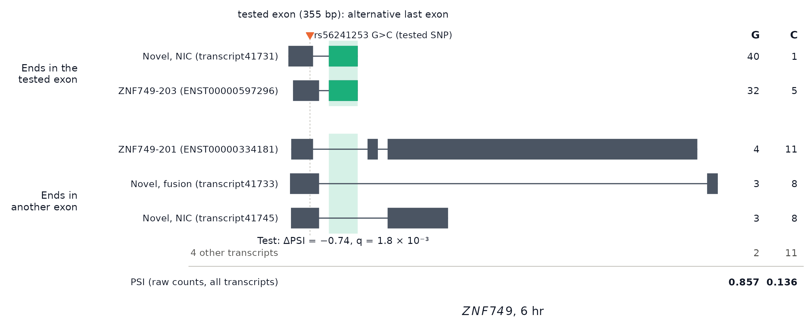
ASAH1
The tested part is a 115-base alternative first exon: ASAH1-264 starts with it, and the other transcripts start at another first exon. isoLASER counts ALT (A) reads as using it more often than REF (G) reads at 1 hour (+21 pp, q = 0.024). At 0 and 6 hours the difference is +7 and +8 pp, below threshold. The 1-hour test uses two donors (CD_21 and CD_31); 0 and 6 hours use CD_21 only. The tested SNP (rs7508) is in the last exon, about 19 kb away in the genome, and about half of the reads reach the plotted region.
Permutation test

Read alignments

| Timepoint | Donors | REF inclusion (raw) | ALT inclusion (raw) | Test dPSI (normalized, pp) |
|---|---|---|---|---|
| 0 hr | CD_21 | 0/22 (0.0%) | 1/14 (7.1%) | +7.1 |
| 1 hr | CD_21,CD_31 | 0/52 (0.0%) | 10/52 (19.2%) | +20.8 |
| 6 hr | CD_21 | 0/40 (0.0%) | 2/25 (8.0%) | +8.0 |
Isoforms and haplotypes

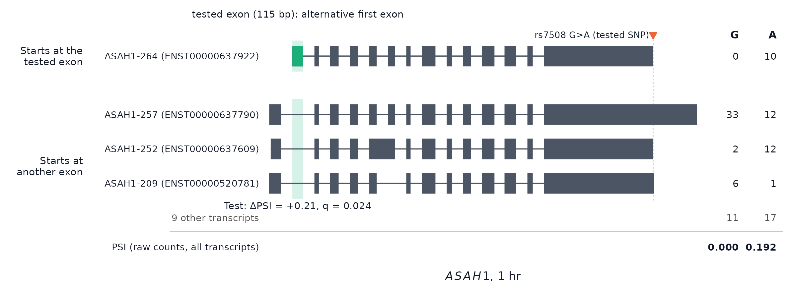
LMBRD1
The first exon ends at one of two donor sites, an alternative 5′ splice site, and the 77-base part is the extra stretch of the longer first exon in LMBRD1-225. isoLASER counts nearly all ALT (A) reads as including it and no REF (G) reads: +93 pp at 6 hours (q = 0.0018).
- 0 hours: a similar difference, +74 pp, but from 35 reads in two donors and below threshold (nominal p = 0.006).
- 1 hour: +85 pp, from only one qualifying donor.
- The gene at 1 hour: it is reported through a different part.
The tested SNP (rs9185) is in the last exon, about 120 kb away in the genome. rs3752787, 113 bases from the part, is in phase with it (C on the A haplotype). Few reads reach the plotted region (8 of 76 at 6 hours).
Permutation test
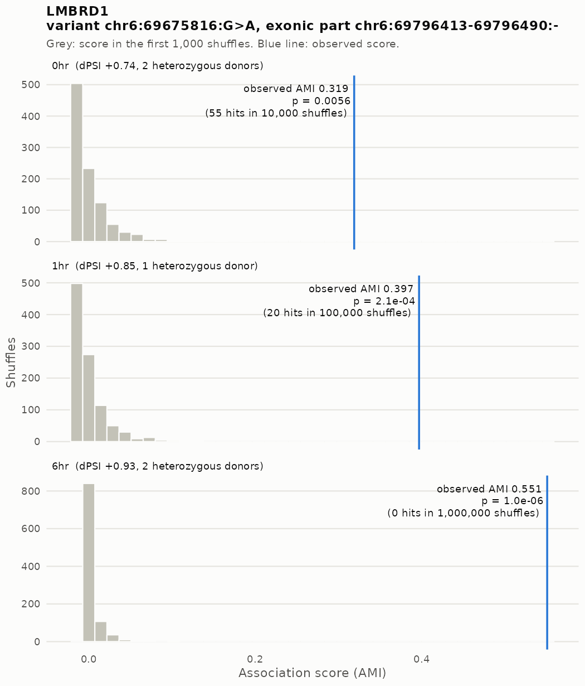
Read alignments
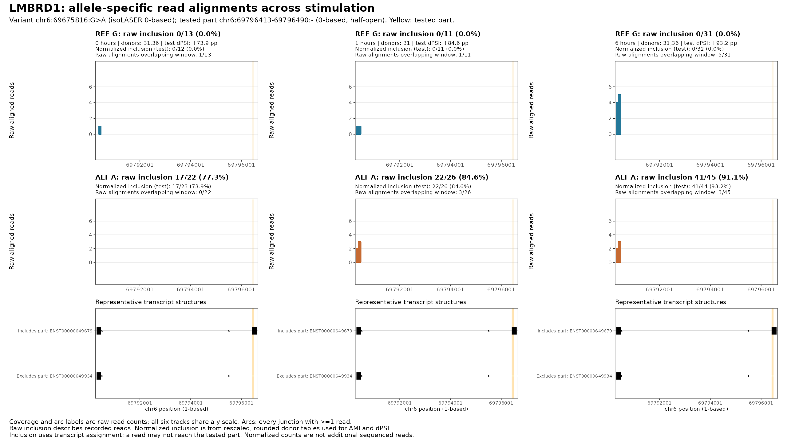
| Timepoint | Donors | REF inclusion (raw) | ALT inclusion (raw) | Test dPSI (normalized, pp) |
|---|---|---|---|---|
| 0 hr | CD_31,CD_36 | 0/13 (0.0%) | 17/22 (77.3%) | +73.9 |
| 1 hr | CD_31 | 0/11 (0.0%) | 22/26 (84.6%) | +84.6 |
| 6 hr | CD_31,CD_36 | 0/31 (0.0%) | 41/45 (91.1%) | +93.2 |
Isoforms and haplotypes
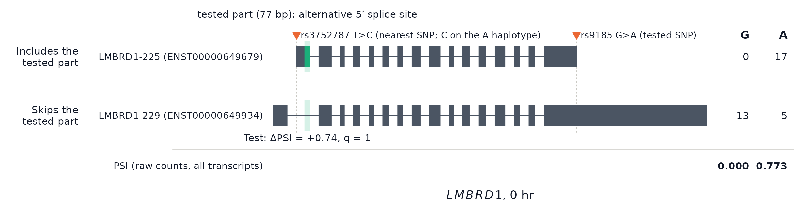
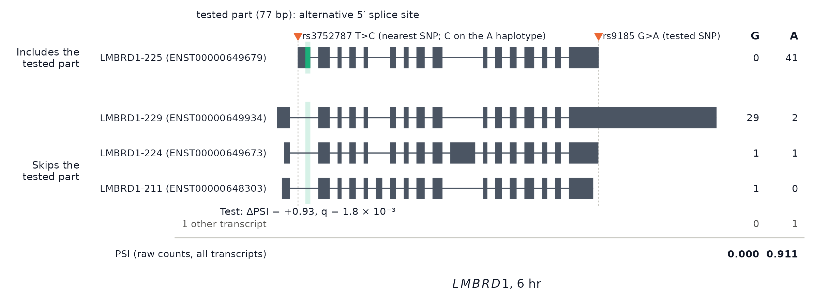
Data
Isoform figures (PDF, and reads per transcript as a table):
KPNA2: 0 hr (PDF, reads per transcript); 6 hr (PDF, reads per transcript)
PARK7: 0 hr (PDF, reads per transcript); 1 hr (PDF, reads per transcript)
ZNF749: 0 hr (PDF, reads per transcript); 6 hr (PDF, reads per transcript)
ASAH1: 0 hr (PDF, reads per transcript); 1 hr (PDF, reads per transcript)
LMBRD1: 0 hr (PDF, reads per transcript); 6 hr (PDF, reads per transcript)
Sashimi plots: inclusion counts, per-donor counts, normalized test counts, junction counts.
Scripts:
11.fdr_results/9.family_rules_examples.shwithADAPTIVE_RULE=panel10nc(24.plot_association.R,25.sashimi_candidates.py,36.refresh_sashimi_labels.R,4.transcript_counts.py), then7.grant_figure_transcripts.R(isoform figures).
All reported genes
Here, reported means q < 0.05 plus the
cis / effect-size screen.
| Pattern | Genes |
|---|---|
| Significant at 3 timepoints | 10 |
| Significant at 2 timepoints | 5 |
| One timepoint; nominal support elsewhere | 7 |
| One timepoint; no nominal support elsewhere | 4 |
| One timepoint; no usable score elsewhere | 3 |
For genes reported at one timepoint, the last three categories describe the representative association at the other timepoints: nominal p < 0.05, p ≥ 0.05 where scored, or no usable score. They are not tests of an allele × time interaction. Among comparisons of significant associations with another timepoint, 88% had nominal p < 0.05 there and 99% had the same effect direction.
Full interactive gene table
All 29 reported genes. The variant, part, timepoint effects, best q and donor count refer to the representative association; Significant at describes the gene across all its associations. With filter marks genes also reported in the run with the clustering filter.
0 / 1 / 6 hr: allelic effect in percentage points, alternative minus reference inclusion, with pooled informative coverage in brackets. The annotations use the same rules as on the original page.
Data: 10.isolaser_permutation/ with
ADAPTIVE_RULE=panel10nc: run by
logs/family_rule_driver.sh panel10nc (scripts 38 and 18–22,
with the independent score check 48 / 50), and compared with the run
with the clustering filter by 53.compare_family_rules.R.
This page’s tables come from 11.fdr_results/3.page_tables.R
with ADAPTIVE_RULE=panel10nc, which writes only to
docs/assets/fdr_panel10nc/.
R version 4.2.0 (2022-04-22)
Platform: x86_64-pc-linux-gnu (64-bit)
Running under: Red Hat Enterprise Linux 8.4 (Ootpa)
Matrix products: default
BLAS/LAPACK: /software/openblas-0.3.13-el8-x86_64/lib/libopenblas_skylakexp-r0.3.13.so
locale:
[1] LC_CTYPE=C.UTF-8 LC_NUMERIC=C LC_TIME=C.UTF-8
[4] LC_COLLATE=C.UTF-8 LC_MONETARY=C.UTF-8 LC_MESSAGES=C.UTF-8
[7] LC_PAPER=C.UTF-8 LC_NAME=C LC_ADDRESS=C
[10] LC_TELEPHONE=C LC_MEASUREMENT=C.UTF-8 LC_IDENTIFICATION=C
attached base packages:
[1] stats graphics grDevices utils datasets methods base
other attached packages:
[1] DT_0.22 data.table_1.14.4 workflowr_1.7.0
loaded via a namespace (and not attached):
[1] Rcpp_1.0.11 compiler_4.2.0 pillar_1.9.0 bslib_0.3.1
[5] later_1.3.0 git2r_0.30.1 jquerylib_0.1.4 tools_4.2.0
[9] getPass_0.2-2 digest_0.6.29 jsonlite_1.8.7 evaluate_0.15
[13] lifecycle_1.0.4 tibble_3.2.1 pkgconfig_2.0.3 rlang_1.1.2
[17] cli_3.6.2 rstudioapi_0.14 crosstalk_1.2.0 yaml_2.3.5
[21] xfun_0.38 fastmap_1.1.0 httr_1.4.5 stringr_1.5.0
[25] knitr_1.42 htmlwidgets_1.6.2 sass_0.4.1 fs_1.5.2
[29] vctrs_0.6.1 rprojroot_2.0.3 glue_1.6.2 R6_2.5.1
[33] processx_3.5.3 fansi_1.0.3 rmarkdown_2.21 callr_3.7.0
[37] magrittr_2.0.3 whisker_0.4 ellipsis_0.3.2 ps_1.7.0
[41] promises_1.2.0.1 htmltools_0.5.7 httpuv_1.6.5 utf8_1.2.2
[45] stringi_1.7.6